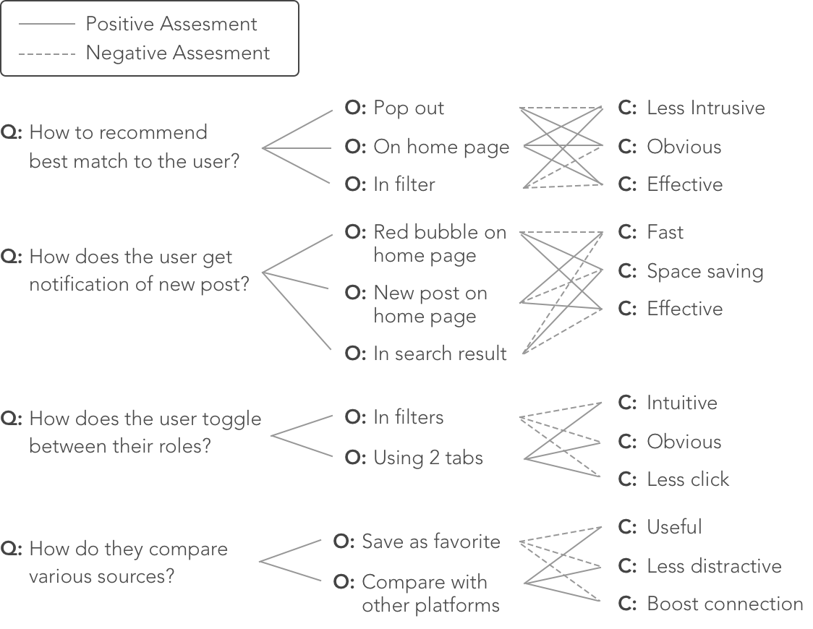

UbookS Mobile App
Helps students sell and purchase used textbooks
Overview
Ubooks is a mobile app to connect the students at the University of Michigan to sell and buy used textbooks. It helps buyer the text to find cheaper sources and sellers to deal with unused books. To better achieve this goal of finding the best match, I designed three methods: tailor their homepage by syncing with their course schedule, onboarding to guide them how to use this app with best match recommendation, and to create a post.
The Motivation
College students are part of the print book consuming group because of the textbook requirements. They recognize that textbooks are essential to their education but have been pushed to the breaking point by skyrocketing costs. They turn to the library for free copies but only find limited sources have already been checked out. They want to borrow or purchase used books from seniors but don't know who to ask. So they finally decide to buy from Amazon, and they are informed the shipping takes 7 days.
All these problems occurred through the process of acquiring a textbook necessitate a cheaper and faster access to connect the demand side and the supply side.

Design Process

Research
Right after I got the inspiration to solve the textbooks issue, I conducted 3 user testing as the pilot study and then identified the 3 pain points are price(how to lower the price), time(how to save time) and connectivity(how to connect the demand side and supply side).
The User
By interviewing students from different department and year, I distilled their traits and most representative needs into 2 personas:
Seller Persona

Buyer Persona
Competitive Analysis
I did 5 competitive analysis based on secondary research and the sources mentioned by prospective users. After analyzing their pros and cons, I extracted some useful aspects from them which provided some helpful insights and helped me to make design decisions.

Insights
Based on the findings gained from interviews and competitive analysis, I extracted the following 3 insights:
1. Users wish the price is negotiable and they can compare different sources to check the condition or price of used books.
2. Users don't want to waste time on either finding the best match or trading process.
3. Users don't mind meeting up with other students, but they are concerned about their reliability and security issues.
Ideate
Candidate Features
Based on the insights and scope, I listed out the common and individual goals of seller and buyer persona in the design goal matrix(figure 1). And then I generated some possible solutions corresponded to each goal. For those problems I couldn't decide how to implement, I used Questions, Options, and Criteria (QOC) method (figure 2) to make trade-offs, and revised the following features:
Filters and sorts:
filters and sorts can help users narrow down the scope of searching to save time, and find their best match at a desired price or book condition.
Personalized home page:
recommend the best match to the user depending on their roles(seller or buyer) and personal needs.
Simple create-a-new-post process:
a brief form with only useful information for users to enter can save them time.
Meet-up location:
by setting up preferred meet-up location, users can have a quick view of where to meet and how long it takes.
Save searches/posts feature:
by saving searches and posts, users can get the updated posting information and compare different sources later.
Review feature:
this feature can reduce the reliability and safety issues of trading.

figure 1.Design Goals Matrix

figure 2.QOC Analysis
Scenarios
To explore how users would use the platform and basic interfaces, I created 3 scenarios based on possible features generated above. The stories cover three use cases of this mobile app for both seller and buyer personas.

Wireframing
I evaluated the possible features and scenarios by making low fidelity prototypes and tested with 5 users. In the initial design, I created the main pages, including sign-in/sign-up, settings, homepage, search, saved, profile and inbox.
{kind=link}
Insights
After testing the lo-fi prototypes with 5 users, I gained the following central insights correlated to the candidate features.
1. As-you-type suggestion: autocomplete feature when searching can be very helpful and convenient.
2. Creat-a-new-post process: instead of typing on the mobile phone, the user is more willing to choose or auto-fill the form by taking a picture.
3. Saved-search feature: they like the idea of saved-search/posts. And they also wish to receive the notification if they need it.
4. Confusing labels and flows: the "sell" and "buy" tabs are confusing and choosing the department and major seems not intuitive too.
5. Sign-in with student ID: users think it's safer to sign-in by using student ID and then they can sync the course to this app to personalize the home page.
Design
Key Features
Based on the feedback I gained from the testing of the lo-fi prototype, I modified my initial design. Here are the 4 key features of my final design.
User Flow
Below shows the user flow. First, user will go through an onboarding wizard, asking some questions. The system will recommend best match for them. Also, the system will personalize the home page based on their courses. If there are no matched results, users can turn to create a new post.

figure 2.User flow of UbookS
High-fidelity prototyping
Walkthrough
In this walkthrough section, I will showcase 3 critical workflows to achieve the final goal of finding and contacting the best match.
Invision Mock-upsWorkflow 1.
Best Match

- Sign up with the student ID
- Then, the user will be guided through the onboarding process to fill in some necessary information.
- The system will automatically generate the best match for the user on the search page.
- To give the user a sense of other features, a short tutorial will show up on the search page too.

Workflow 2.
Personalized Home Page


- Sign in with the student ID
- Then, the user will see the personalized home page based on courses synced from Canvas.
- The user can start searching bytyping in the search bar.
- Or select from the dashboard and then go to the search page.
- On the search page, the user can narrow down the result by setting upfilters and sorts.
Workflow 3.
Create a new post

- If the user didn't find the best match through either home page or onboarding suggestion, he can always create a new post. The system will bring up the information entered previously.
- While browsing, the user can click into book details page and see the user profile bar fixed at the bottom.
- The user can bring up the user profile page and see the reviews.
- If the user confirm this is a good deal, he can contact that user through inbox with an automatically sent out link to the post.

Style Guide

Impact
In the final solution, there are three main methods for users to find their best match: 1) best match suggestions based on the information provided through onboarding; 2) personalized homepage synced with canvas courses; 3) and finally "create a new post."
Onboarding and tutorial and guide users to better make use of the app. Filters and sorts can help users to narrow down their search results. The tabs of "sell and buy" make it easy for users to toggle between different roles. asy for users As-you-type suggestions allow users to view history search and finish the search query more efficiently. And the saved search/posts can keep users updated, etc.
With the help of Ubooks, students at the University of Michigan can sell/buy the textbook in a more efficient method at expected prices with a delightful mood.